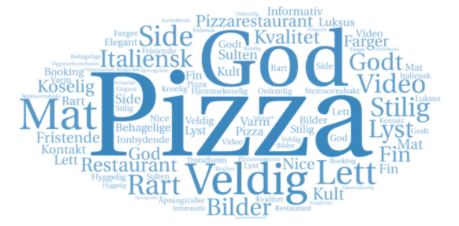
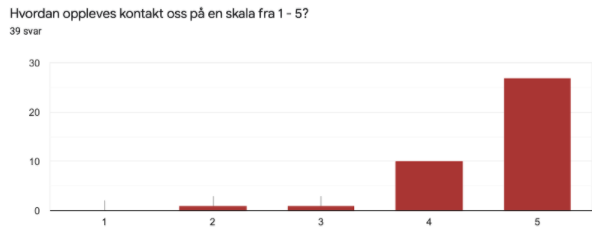

Klientnavn: Prietzeria
Prietzeria er en imaginær landsdekkende pizzarestaurant
Nettside: https://prietzeria.xyz/
Kontaktperson: Mario Italiano
Vi brukte SUS-skjema, observasjonsskjema og samtykkeerklæring for testingen for å ivareta brukeren vi testet og dokumentere testingen. Samtykkeerklæring var for å sikre at deltakerne følte seg trygge i intervju og brukertesting. Observasjonsskjema var for vår egen del, da vi noterte underveis hva vi observerte i brukertestene og hva slags forslag som kunne løse problemer brukeren fikk. SUS-skjema, “System Usability Scale”, er et pålitelig verktøy som brukes for å få en tallmessig verdi på testingen. Det inneholder ti spørsmål der deltakeren må svare med et tall fra 1 til 5 for å indikerer hvor uenig eller enig deltakeren er med utsagnet. SUS-skjema er laget av John Brooke i 1986. Den tillater evaluering og testing av et bredt utvalg av produkter og tjenester. (usability.gov, n.d.).
Antall spørsmål: 19 spørsmål, 5 av de er valgfrie
Antall svar: 39
Antall menn: 14
Antall kvinner: 25
I starten av spørreundersøkelsen blir brukeren informert om hva slags nettside det er og hva slags hensikt undersøkelsen har. Det linkes også til nettsiden og gis litt ekstra informasjon om prosjektet. Videre skal brukeren svare på kjønn og alder. Det er valgfritt å skrive hele navnet og oppgi kontaktinformasjon for eventuell intervjuing.
Spørsmålene starter med helhetsinntrykk av hovedsiden, de ulike tilhørende sidene, logo og designvalg som er tatt. I tillegg må brukere spesifisere hva slags plattform som brukes og hvilken nettleser brukeren benytter. Spørsmålet har svaralternativer og muligheten for å skrive inn et annet svaralternativ. Senere bes brukeren om å rangere ulike designvalg med tanke på stil, font, linjeavstand, plassering, osv på en skala fra 1 til 5. Det beskrives i første spørsmål at 1 betyr “dårlig” og 5 betyr “utmerket”.
På slutten av undersøkelsen er det noen spørsmål som har større kommentarfelt og avsnitt for svaret. Her er det også to valgfrie spørsmål, om det er noe unødvendig på nettsiden eller noe som mangler. Siste spørsmål er også valgfritt og spør om brukeren har noen andre kommentarer helt på tampen av undersøkelsen. Vi har ikke spurt klienten om å teste nettsiden siden Prietzeria er en imaginær restaurant. Vi testet ikke bare brukergruppen ved å sende ut spørreundersøkelse, men intervjuet og brukertestet også.
Antall intervjuer: 4
Antall menn: 1
Antall kvinner: 3
Vi har også intervjuet noen brukere om nettsiden. Spørsmålene var mer detaljerte enn spørreundersøkelsen. Her er spørsmålene:
Antall brukertester: 12
Antall menn: 5
Antall kvinner: 7
SUS-Score (System Usability Scale): 93,6 av 100
Vi brukertestet noen ved å observere og ga brukeren tre oppgaver etter at brukeren hadde fått sett litt på nettsiden først. Vi benyttet oss av observasjonsskjema underveis for å skrive opp problemer som oppstod, detaljert hva problemet var og forslag til løsning. Oppgavene lød som følger:
Brukergruppen til Prietzeria spenner over en stor gruppe. Nettsiden gjelder både for unge og gamle som er glad i pizza og ønsker å dra på restaurant for å spise. Vi har derfor sendt ut spørreundersøkelse til alle aldre. Brukerne vi har spurt, intervjuet og testet har samsvart med nettsiden sitt publikum, og vi har kontaktet familie, venner og andre mulige brukere i testingen. Vi ønsker å presentere hvilke brukere vi nådde frem til, ved å vise prosentandel for de ulike aldersgruppene.
Yngre enn 20 år: 0%
Alder 20 - 30 år: 74,4%
Alder 30 - 50 år: 12,8%
Alder 60 - 80 år: 12,8%
Eldre enn 80 år: 0%
Testingen var suksessfull, og vi fikk mye verdifull tilbakemelding. Dette kan bidra til å forbedre nettsiden og gjøre den mer brukervennlig. Derfor har vi vært takknemlige overfor brukerne vi har testet og sørget for at de har følt seg ivaretatt. Det har vært mulig å være anonym på spørreundersøkelsen selv om man må oppgi kjønn og aldersgruppe. Før intervjuer og brukertester har vi spurt brukerne om samtykke og bedt dem skrive under på samtykkeerklæring. Det har også vært mulig å trekke seg underveis og trekke tilbake informasjon man har kommet med. Dette har resultert i fornøyde deltakere som har gitt oss mye positiv tilbakemelding om nettsiden, samt mye gode vurderinger og forslag som kan forbedre nettsiden.
Plattformer: MAC, andre typer datamaskiner, iPad nettbrett, iPhone og Samsung smarttelefon og annet.
Brukerne fra spørreundersøkelsen svarte med positive tilbakemeldinger, kom med forslag til forbedringer og ga konstruktiv kritikk.
Hva er det første som slår deg når du ser Prietzeria?
Når brukerne møter hjemmesiden, får de inntrykk av at det er en italiensk restaurant som serverer pizza. De oppfatter Prietzeria som hjemmekoselig og syntes designet har fin layout. Det var også en som hadde negativ kommentar til logoen og mente at den ga assosiasjoner til pizza, kebab og burger. Samtidig mente denne brukeren at filmen viste at det er en flottere italiensk restaurant enn disse assosiasjonene kunne gi. Dette kan tyde på at logoens design kanskje ble for enkelt og kunne blitt laget i mer lignende stil som videoen for å gi et mer helhetlig inntrykk. Vi vurderer likevel at dette var en subjektiv mening, og at den var i mindretall.
Flere av brukerne fikk også et godt førsteinntrykk av plasseringen til restaurantens adresse, at de har en Facebook-side og at de kan kontaktes via e-post. Vi har bevisst valgt å inkludere disse tre alternativene øverst til venstre i navigasjonen. I tidlig brukertesting hadde vi et alternativ til som var “bytt språk”, men dette ble fjernet etter tilbakemeldinger. Mer om dette i punkt 7 under header og navigasjon.
Hvilket inntrykk gir Prietzeria-logoen?
Vi fikk generelt gode tilbakemeldinger og positive kommentarer. Logoen blir beskrevet som blant annet enkel, kul, varm, mat laget fra bunnen av, hyggelig restaurant, lett forståelig, stilren, troverdig, unik, profesjonell, hjemmekoselig, smakfull, pen, og at den har et enkelt og fint design. Samtidig var det et fåtall av svarene som var mer likegyldig innstilt, og som kommenterte at de ikke la noe særlig merke til logoen.
Hva syntes du om fonten og teksten sin…?
I dette spørsmålet var flertallet positive til designvalgene som var tatt. Svaralternativene var dårlig, middels og utmerket. De fleste hadde svart utmerket, og det var et mindretall som svarte dårlig. Det var en som svarte dårlig på stil, to på størrelse og to på linjeavstand til teksten. Dette tyder på at vi kunne gjort teksten større og hatt større linjeavstand, men dette hadde ikke en betydelig påvirkning på nettsidens helhetsinntrykk. For kategorien plassering var det 16 som svarte middels og resten svarte utmerket. Alt i alt krysset majoriteten av for utmerket på alle kategoriene.
Hva syntes du om fargebruken til skrift, bakgrunn, linker, knapper og quotes?
Her faller den lysen skriften mot mørk bakgrunn i smak hos brukerne, og de liker også at linkene tar dem dit de vil, for eksempel adressen som viderekobler brukeren til google maps. En kommenterte at lenkene burde vært mer synlige, og dette har vi implementert i etterkant med “hover”-farge og understreking for personvernerklæring. Generelt liker brukerne fargebruken som gjør nettsiden enkel å lese og gir god kontrast. En mulig endring etter testing kunne vært å gjøre fontens farge varmere, i stil med nettsidens inntrykk. Det var også flere som satte spørsmålstegn ved hvorfor den hvite kanten var der.
Hvordan oppleves hjemmesiden, menyen, book bord og kontakt oss?(skala 1-5)
Alle fire spørsmålene fikk gjennomsnittlig 5 som indikerer at brukerne syntes sidene virket meget intuitive. Det var en som svarte 2 på kontakt oss, som vil si at de syntes den virket litt uforståelig. Dette tror vi har noe med navnet å gjøre. Det var noen kommentarer om at denne siden eventuelt kan hete “om oss” og at navnet “kontakt oss” ikke ga helt mening for dem på grunn av de ulike avsnittene. Dette går på innholdet i teksten på nettsiden.
Brukerne fra intervjuene kom med gode tilbakemeldinger i intervjuene. Det var mange gode forslag som kunne forbedre nettsiden og gjøre den mer intuitiv. De ulike ønskene varierte fra bruker til bruker, siden nettsidens publikum spenner over en sammensatt brukergruppe. Dette må vi ta høyde for når vi implementerer endringer og reflekterer over hvilke endringer som er nødvendige for å forbedre nettsiden. Brukerne var alt i alt veldig imponerte over Prietzeria.
Intervjuene ga oss verdifull tilbakemelding om brukernes oppfatning av menyen. Det var et generelt ønske om større piler for antallet av en rett, en handlekurv som følger etter deg på høyresiden, og bilder som stemmer overens med retten. Dette har blitt endret etter testing, og vi har tatt i bruk pluss- og minustegn i stedet for piler, se punkt 7 menu.html under handlekurv.
Det kom fram i et av intervjuene at det hadde vært fint med et søkefelt for hele nettsiden. Dette ser vi på som en god funksjonalitet for nettsiden som vi gjerne skulle tatt med i en senere iterasjon. På denne måten hadde brukerne funnet fram på en enklere måte, og nettsiden ville blitt enda mer brukervennlig.
Brukerne fra brukertesting syntes brukertesten var spennende. Det var et flertall som oppfattet nettsiden til Prietzeria som innbydende og oversiktlig. Underveis i brukertestingen understreket vi at det var viktig å “tenke høyt” og si det man gjorde. Vi som observerte, fulgte nøye med, noterte, ga oppgaver og spurte etter hvert spørsmål.
Brukerne ønsket større piler for antallet og en tydeligere handlekurv, siden de fleste brukerne ikke ville scrollet helt ned på siden.
Det var mye viktig informasjon på siden og bra at det var et interaktivt kart. Da brukerne scrollet nedover, zoomet man automatisk ut på kartet når man kom nær. En idé er å holde kartet mer statisk fram til brukeren “aktiverer” kartet, ved å trykke på det for å se på kartet og zoome ut og inn.
Det var generelt et ønske om å ha et vindu for kalender som kom fram når man trykker på datoen. Drop down menyen for tidspunktet fungerte veldig bra. Feltene for utfylling var tydelige, og det var bra at de krevde riktig informasjon og format. Beskjedene man fikk etter å ha godkjent personvernerklæring, var klare og tydelige. Det var positivt at man kunne endre reservasjonen, måtte godta personvernerklæring og se søsterrestauranter lengre ned. Det var et fåtall som mente at søsterrestauranter forsvant litt, og at det kunne bli uklart hva man skulle gjøre om det var fullt på restauranten. Det kan være en god idé å ha søsterrestauranter før bildet på bookingsiden, og dette har vi tatt med som endring.
Det har vært interessant og spennende å spørre, intervjue og brukerteste brukerne. De har kommet med mye nyttig tilbakemelding og konstruktiv kritikk som er med på å forbedre nettsiden.
Hvit kant
Det var noen brukere som kommenterte den hvite kanten rundt siden som repeterer seg på hver side, og enkelte mente den var unødvendig. En bruker syntes kanten fikk nettsiden til å se “billig” ut. Vi har likevel ikke valgt å ta bort den hvite kanten, fordi vi mener at nettsiden både ser bra ut med og uten. Vi må ta hensyn til at det er subjektive meninger fra brukerne når vi leser tilbakemeldingene. Likevel ville vi endret “backdropet”, den hvite kanten rundt, til en grå kant med en varmere fargetone ved senere iterasjon, da dette vil stå mer i stil med nettsidens inntrykk. Vi ville eventuelt også vurdert å ta bort den hvite kanten i bredden og undersøkt responsen på dette ved å teste flere brukere. Bakgrunn til logoen øverst ville vi beholdt lys uansett for å tydeliggjøre logoen som vi i tillegg har gjort større.
Video
Vi fikk en tilbakemelding med ønske om å skalere ned videoen og gjøre den mindre, slik at teksten under oppfattes som mer “tilgjengelig”. På denne måten ville det vært lettere å finne informasjonen om Prietzeria. Det var ikke et flertall som nevnte størrelsen til videoen som et problem eller en unødvendig faktor. Vi har foreløpig ikke tatt med denne endringen i nettsiden.
Vi vil videre gå mer detaljert inn på endringer og vår respons på tilbakemeldinger når det gjelder header/navgiasjon, index.html, menu.html, contact.html og litt om covid-19.html.
Til venstre i navigasjonen på alle sider er det lenker til adresse, Facebook og mail. Det var tidligere en lenke til “Bytt språk” her. Vi har valgt å ikke oversette siden til et annet språk enn norsk, da dette går mer på nettsidens innhold. Vi har dermed valgt å fjerne dette alternativet i navigasjonen. Vi så under brukertestingen at noen brukere også ønsket færrest mulig valgalternativer. Ikonene har i tillegg blitt midtstilt med teksten, som følge av observasjoner under brukertesting.
Informasjonen om adresse, Facebook og mail kunne også blitt plassert nederst på siden, mener en bruker fra undersøkelsen. Det begrunnes med at det er mer informativt enn “reklamete” og foreslås at informasjonen kan ta mindre plass. Det kunne kanskje vært en god idé å flytte de fire linjene med informasjon nede i footeren, men plassering av kontaktinformasjon varierer fra restaurant til restaurant. Med tanke på kommentar om globus-ikon til “bytt språk”, har vi konkludert med å endre de fire linjene til tre, ved å fjerne “bytt språk”. Vi har i tillegg kortet ned adressen til kun å være “Kristianstensbakken 70”. Denne seksjonen tar da mindre plass, gir et enklere uttrykk og stemmer overens med forslaget om at kontaktinformasjon skal ta mindre plass.
Valgalternativene for hjem, meny, book bord og kontakt oss oppe til høyre endres til en strekmeny som fungerer som en hamburgermeny. Dette kommer opp når brukeren har et lite skjermvindu eller bruker mobilversjonen. Det var ikke planlagt fra P2 mockupsene, men er implementert i ettertid for å designe nettsiden brukervennlig for mobilversjonen. Hamburgermenyen har tydelige og tykke streker og er plassert øverst til høyre etter logoen. Plasseringen er der teksten ellers hadde stått, og dette er for å ikke miste fokus på hamburgermenyen.
Avsnittet om vinsmaking nederst har vi valgt å beholde, selv om det var tilbakemeldinger om at det virket malplassert på hjemmesiden. Dette er fordi innholdet ikke blir vurdert i prosjektet, men det viktigste er utseende, funksjonalitet og kode. Vi er enige med brukerne og ville eventuelt flyttet dette til menysiden i en senere iterasjon av Prietzeria, siden dette ville holdt nettsiden mer ren og enkel.
Etter tilbakemeldinger fra testingen, la vi til en funksjon i menu.html som fungerer som en handlekurv og kvittering. Dette er fordi vi ønsket å gjøre menu.html mer interaktiv med brukeren, gjøre det enklere for brukeren å bestille mat og ha mer sammenheng med knappene vi hadde i mockupen.
Knapper
Fra P2 design hadde vi fire knapper på menu.html som har blitt redusert til to knapper. Vi beholdt knappene “Spis her” og “Takeaway” for å gjøre det enklere og mer intuitivt. Knappene “Foodora” og “Wolt” ble deretter plassert i en modal, et slags pop up vindu, som dukket opp om brukeren trykket på takeaway. Dette valgte vi å gjøre siden foodora og wolt er takeaway- og matleveringstjenester som er samarbeidspartnere med Prietzeria. I tillegg la vi til knappen “Ring og bestill” som brukeren kan trykke på for å ringe direkte til restauranten. Brukeren kan også trykke “Spis her” som åpner et pop up vindu med ordreoversikten og knappene: “Betal med vipps”, “Betal med kort” og “Betal med gavekort”. Dermed blir brukeren enten viderekoblet til vipps for å betale, eller så får brukeren beskjed om “Takk for din bestilling! En servitør vil ankomme ditt bord snarest”. Da skal servitøren komme til bordet og ta imot bestillingen.
Det kunne også vært lagt inn en betalingsportal for kort, som for eksempel benyttes av Graffi restauranten gjennom wink order. Dette ville vært et smitteverntiltak for å unngå mest mulig kontakt mellom kunder og servitører på restauranten. Ved vanlige omstendigheter vil servitørene ha en større rolle, siden dette skaper mer service, styrker identiteten til Prietzeria og gir en varmere atmosfære. Da kan servitøren fortelle om de ulike vinene, anbefalinger, dagens pizza og gi informasjon om allergener.
Handlekurv
Når brukeren er på nettsiden, fungerer handlekurven som en oversikt og bestilling. Handlekurven er en navbar som følger etter deg og viser oversikten til ordren med antall, liste over valgte matretter og totalsum til enhver tid. De ulike rettene har fått knapper som indikerer at man kan øke eller minske antallet av en rett. Plusstegnet er plassert til høyre, mens minustegnet er til venstre, siden dette har sammenheng med en matematisk tall-linje som gir et fornuftig inntrykk av plassering. Antallet vil stå i midten av tegnene slik at det er nok plass mellom tegnene og mer oversiktlig for brukeren. I tillegg vil det være lettere for brukeren å trykke riktig selv ved mindre skjermer eller vinduer. Vi hadde først med piler med en pekende oppover og en nedover som var plassert sammen. Dette gjorde det mer utfordrende for brukerne å trykke riktig, slik at de fikk det ønskede antallet av en rett. Vi endret da knappene for å gi mer plass rundt knappene.
Vi la også til en sidebar for kategoriene på menyen, slik at det var enklere å komme seg raskt til den matretten man ønsker ved å trykke på tilhørende kategori. Dette var også på grunn av tilbakemeldinger som sa at menu.html ble en lengre side enn de andre, og at det var noen brukere som ikke tok seg tid til å scrolle helt ned. En kommentar lød som følger; “Menyen blir veldig lang å skulle bla seg gjennom, og det hadde vært fint å kunne se alle rettene uten å måtte scrolle så mye opp og ned.”
Dermed var det både viktig å få med kategoriene i en sidebar og handlekurven som følger deg fra starten. Ved mindre skjermvinduer og på mobilversjonen er sidebaren med kategoriene plassert under overskriften “Meny” og følger ikke etter deg mens du scroller nedover. Dette er for å beholde plass nok på mobilskjermen for å kunne se på rettene, uten å bli forstyrret av for mange navbarer.
Bilder
For hver rett kommer det opp et tilfeldig bilde fra “Unsplash”. Dette er implementert etter testing, siden vi tidligere hadde samme bilde på alle rettene. Det ble misvisende for deltakere som ble brukertestet, fordi dette medførte at de trodde restauranten kun serverte pizza. Vi hadde ikke med bilde i menyen for rettene i mockupen fra P2, men bestemte oss for å ta med et bilde før testingen, siden bilder beskriver menyen bedre og er et visuelt virkemiddel for nettsiden. Gjennom brukertesting fikk vi blant annet vite at det er viktig med et unikt bilde for hver rett. Dette krever enkel koding, men også mye tid, siden det er flere retter som trenger et bilde som stemmer overens med beskrivelsen. Vi har valgt å bruke tiden på annen kode, samt tid til å skrive refleksjonen rundt menu.html og nettsiden generelt. En bruker mente også at bildene var så viktige, at de heller skulle vært større enn ikke tilstede i det hele tatt. Brukeren mente også at hun fanges bedre av forklarende bilder og det visuelle. Bildene blir dermed et visuelt virkemiddel for å fremme salg og reklamere.
En annen bruker ønsket seg en lengre meny med muligheten for å bestille for eksempel drikke og tilbehør. Dette er forståelig med tanke på at vi har nevnt at Prietzeria “er kjent for sitt store utvalg av viner” på hjemmesiden. Dette kunne vi implementert ved å skrive inn flere valgalternativer i items.js, men siden denne koden er den samme som for matrettene, vil dette kun vise noe vi allerede kan. Derfor har vi fokusert på å justere og finpusse koden for menu.html, i stedet for å utvide menyen. Samtidig ser vi ikke bort fra at dette er et godt innspill, og at det ville økt troverdigheten og hvor realistisk Prietzeria fremstår overfor brukeren. På den andre siden er det ikke normalt for restauranter å føre opp drikke som for eksempel ulike typer brus på nettsiden. Prietzeria har også et stort utvalg viner, og det er best om de spesielt vininteressert melder seg opp til nyhetsbrevene eller vinsmaking for å utforske utvalget. Det er mulig å gjøre på hjemmesiden.
Til slutt ønsker vi også å kommentere knappen, “Allergener”, som ikke er med. Vi har fjernet denne knappen og ikke tatt med informasjon om allergier fordi dette er tidkrevende. Etter møte med veileder har vi også konkludert med at innholdet til teksten ikke skal prioriteres, siden det ikke tas med i sluttvurderingen. Dette hadde vi likevel tatt med i en senere iterasjon.
En av de første tilbakemeldingene gjaldt fargebruken på skjemaet. I versjonen brukeren testet var knappene farget rød og grønn, for å symbolisere fram og tilbake. Dette passet ikke til resten av designet, og gjorde teksten på knappen utydelig. Knappene fikk derfor farger som passer bedre til resten av designet. Dette designvalget gjorde også teksten på knappene mer leselige.
En annen tilbakemelding forteller at valideringen av input fungerer, samt muligheten at brukeren kan gå fram og tilbake i bookingløsningen; «Liker at den stopper opp hvis man har glemt å fylle ut noe som er nødvendig, og at man kan gjennomgå reservasjonen før den bekreftes». Det var fint å få en bekreftelse på at valideringen er logisk for brukerne.
Brukerne liker kontaktinformasjonen som vises og liker at det er et kart de kan bruke for å se hvor restauranten er lokalisert. På den andre siden syntes de at navnet til siden kan være misvisende, og at tekstinnholdet “Gavekort” og “Jobb hos oss” ikke passer inn på denne siden. Med tanke på disse underkategoriene ønsker vi å endre navnet til “Om oss”, slik at siden kan ha tekst som forteller litt mer om restauranten og hvilke muligheter som finnes. Her kan også eventuelt teksten om Prietzeria fra første avsnitt på hjemmesiden presenteres. Historien kan passe bedre inn på en side som heter “Om oss”, i stedet for på selve hjemmesiden. I tillegg kunne det vært et kontaktskjema her for brukerne som ønsker å gi en kjapp beskjed til restauranten. Det kunne vi tatt med senere, men vi endrer navnet på siden i første omgang fra “Kontakt oss” til “Om oss”.
Tilbakemelding tilsier at vi kunne hatt med mer informasjon om situasjonen med tanke på Covid-19. Detter er vi enige i, men vi endrer ikke dette fordi det går på innholdet til teksten og ikke selve koden.
Link til nettsiden er plassert nederst i footeren. Det som er permanent bør være i hamburgermenyen og derfor er covid-19 ikke plassert der men nederst i footeren. Vi kunne med fordel hatt med en tydelig navbar øverst med link til viktig informasjon om Covid-19 situasjonen. Dette ville vi ikke ha fokus på for vi ønsket å beholde den varme og koselige atmosfæren til Prietzeria.
Vi har opplevd dette gruppeprosjektet som lærerikt, spennende og interessant. Det har vært utfordrende til tider å ta designvalg, kode så nettsiden gjorde slik som vi ville og innhente tilstrekkelig med informasjon fra brukerne. Vi har lært mye om design, koding for HTML, CSS og JS, brukertesting og samarbeid. Det har vært viktig å ha nok møter underveis i prosessen og holde seg i rute med planen. Dette har selvfølgelig ikke gått helt som forventet til enhver tid, siden det har vært vanskelig å følge skjema fullstendig. Det har vært hjelpsomt å snakke med veileder, dra på lab for Webteknologi på Gløshaugen og samarbeide innad i gruppen over Slack.
I tillegg til generelle innleveringer i IT2805 Webteknologi har vi lært mer om komplisert kode for CSS og JS, samt lært å håndtere lange HTML-filer. For eksempel har vi lært mer om funksjoner og stil for knapp, bestillingssystem, skjemavalidering, navigasjonsbar og hvordan flytende elementer plasseres i forhold til andre elementer på siden. Denne kunnskapen har vi fått underveis mens vi har prøvet og feilet. Det har vært viktig å ikke gi opp, men prøve seg frem og kode helt til man finner en løsning på de ulike problemstillingene vi har møtt på.
Vi vil ta med oss viktig lærdom fra dette prosjektet om hvordan en nettside interagerer med brukeren. Det har vært spennende å observere brukerne underveis i tester og givende å få svar på spørreundersøkelse og intervjuer. Brukerne er de vi produserer, programmerer og designer for, og det har vært morsomt å se brukerne sitt første møte med nettsiden og hvilket inntrykk Prietzeria har gitt. På slutten av prosjektet har det også vært lærerikt å implementere endringer og ta med gode forslag fra brukerne i iterasjoner av nettsiden. Videre vil vi ta med oss kunnskaper innen koding, vurderinger av designvalg og erfaringer fra brukertesting som vil være relevant ved senere jobbsituasjoner.
Usability.gov (n.d.). System Usability Scale (SUS). Retrieved from https://www.usability.gov/how-to-and-tools/methods/system-usability-scale.html (Accessed 03. November)
Unsplash.com (n.d.). Photos. Retrieved from https://unsplash.com (Accessed 03. November)
Snazzymaps.com (n.d.). Build a Map. Retrieved from https://snazzymaps.com/build-a-map/ (Accessed 03. November)